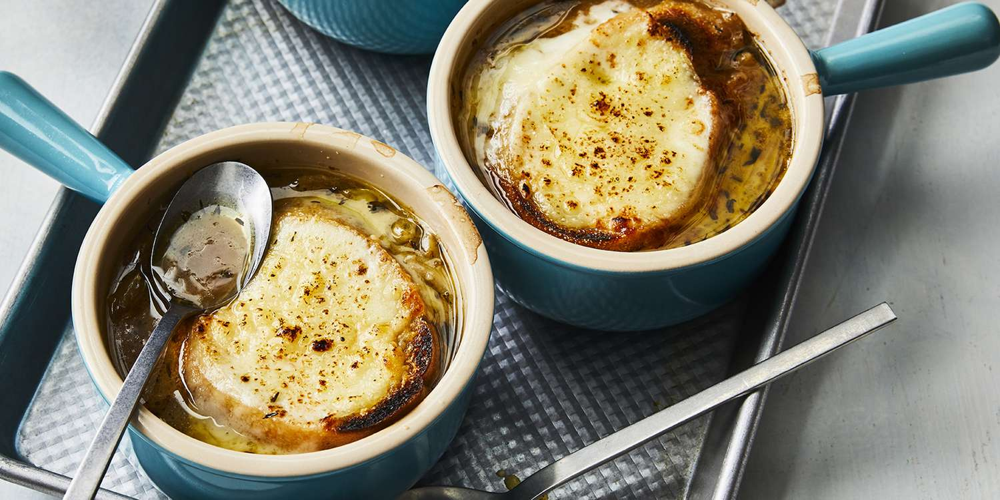

Onion Soup Recipe

Description
Onion soup is a classic and comforting dish with roots in French cuisine,
renowned for its rich flavors and simple preparation. This soup begins with
the slow caramelization of thinly sliced onions, which transforms their natural
sweetness into a deep, savory base. Simmered in a flavorful broth, the tender onions
create a robust soup that warms both body and soul.
Ingredients
- 4 large onions, thinly sliced
- 4 cups beef or vegetable broth
- 2 tablespoons butter
- 1 tablespoon olive oil
- Salt and pepper, to taste
- 4 slices of crusty bread
- 1 cup shredded Gruyère or Swiss cheese
Steps
- In a large pot, melt butter with olive oil over medium heat.
Add sliced onions and cook until caramelized, stirring occasionally, about 20-25 minutes
- Pour in the beef or vegetable broth and bring to a simmer. Season with salt and pepper to taste
- Preheat the oven broiler. Ladle the soup into oven-safe bowls.
Top each bowl with a slice of crusty bread and sprinkle with shredded cheese
- Place the bowls on a baking sheet and broil until the cheese is melted and bubbly, about 2-3 minutes
- Carefully remove from the oven and serve hot. Enjoy your comforting onion soup!